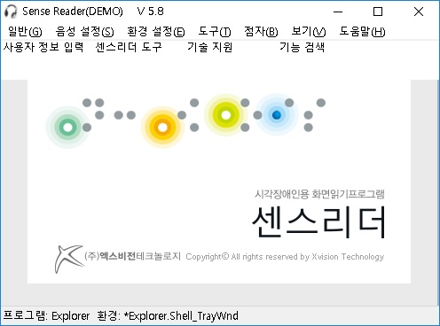
센스리더 툴바란?
센스리더 툴바는 센스리더 프로그램 창에서 메뉴 호출 없이 방향키를 이용하여 바로 사용할 수 있는 도구를 지칭합니다.
센스리더 툴바 메뉴의 사용 방법은 다음과 같습니다.
① Ctrl + \(백슬래시)나 Ctrl + Alt + S키를 눌러 센스리더 프로그램 창을 호출 합니다.
② Alt키로 메뉴 호출 없이 ↑(위), ↓(아래) 방향키나, HOME, END키를 이용하여 접근이 가능하며 실행은 ENTER, 이전 항목은 ←(백스페이스), 팝업 메뉴는 ESC키로 닫을 수 있습니다.
기능 검색 메뉴에서는 센스리더에서 사용되는 기능을 빠르게 찾아주며, 실행할 수 있도록 도와줍니다.
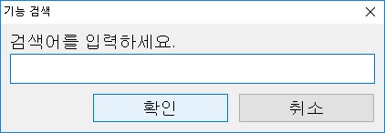
기능 검색 편집창에 찾고자 하는 기능을 입력합니다.
예를 들어 '마우스'에 대한 기능을 모아보고 싶은 경우 편집창에 '마우스'라고 입력한 후, 탭키를 눌러 '확인' 버튼에서 엔터를 누릅니다.
또한 검색어 없이 편집창에서 바로 엔터키를 누를 경우 센스리더의 모든 기능이 나타나게 됩니다.
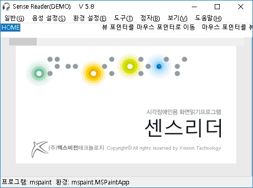
검색이 완료된 경우 입력한 검색어가 포함된 센스리더의 기능이 나열되며, 방향키를 이용하여 원하는 기능으로 이동하고 해당 기능에서 엔터키를 눌러 기능을 실행할 수 있습니다.
이동한 기능에 연결된 단축키가 있을 경우 해당 기능 이름 옆에 단축키 정보가 같이 나타납니다.
또한 검색된 기능에서 팝업키를 눌러 상황에 맞는 메뉴를 호출하여 추가적으로 수행할 수 있는 기능은 다음과 같습니다.
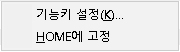
원하는 기능에서 팝업키를 누르면 '기능키 설정'과 'HOME에 고정' 메뉴가 나타납니다.
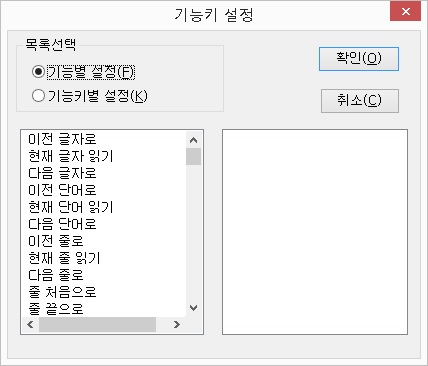
기능키 설정은 기본적으로 [환경 설정] 메뉴의 '기능키 설정'과 동일합니다.
다만 상황에 맞는 메뉴 중 '기능키 설정'에서 엔터를 누르면 '기능키 설정' 대화상자가 나타나며 탭키를 한번 눌러 기능 목록으로 이동할 경우 검색 결과에서 찾았던 기능으로 바로 포커스가 됩니다.
또한 해당 기능에 대한 단축키는 목록으로 이동 후 탭키를 누르면 나타나는 기능키 목록에서 확인이 가능하며 단축키를 변경 또는 추가하고자 하는 경우 기능키 설정에서 자세한 방법을 확인하실 수 있습니다.
검색된 기능을 자주 사용하는 경우 HOME 메뉴에 고정 기능으로 센스리더 프로그램 창을 활성화한 기본 메뉴에 해당 기능을 고정시켜 언제든지 빠르게 실행할 수 있습니다.
또한 반대로 고정한 메뉴를 HOME 메뉴에서 제외시키고자 하는 경우 HOME 메뉴에 나열된 기능 중 해당 기능으로 이동하여 팝업키를 눌러 상황에 맞는 메뉴의 'HOME에서 제외' 항목을 통해 언제든지 제외시킬 수 있습니다.
센스리더 도구 메뉴에서는 센스리더 설치시 함께 설치되는 구성요소 및 기본 기능들을 보여줍니다.
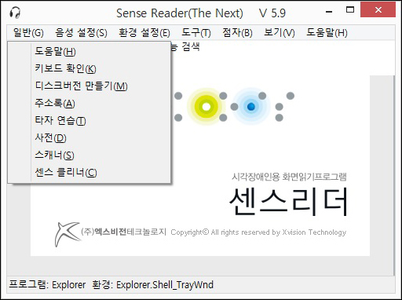
센스리더 에디션에 따라 이용할 수 있는 기능에 차이가 있으며 기본적으로는 '도움말', '키보드 확인', '디스크버전 만들기', '음성 엔진 설치 관리자', '레지스트리 복구', '주소록', '타자 연습', '사전', '스캐너', '센스 클리너'가 제공 됩니다.
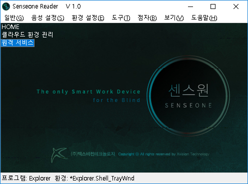
센스리더의 인터넷 도구에서는 클라우드 환경 관리와 원격 서비스를 지원합니다.
클라우드 환경 관리란 사용자가 직접 설정한 환경 파일을 센스리더 전용 서버에 백업하고 문제가 발생한 경우 손쉽게 복원할 수 있는 기능입니다.
백업은 1회만 가능하고 설정을 변경 후 다시 백업할 경우 기존에 백업한 환경은 자동으로 삭제 되며, 새로운 환경 파일이 백업 됩니다.
센스리더의 환경 설정을 완료한 경우 다음과 같이 서버에 백업할 수 있습니다.
① 센스리더를 호출하여 툴바 메뉴의 3. 인터넷 도구로 진입 합니다.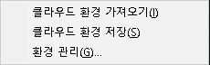
③ 아래 방향키로 클라우드 환경 저장하기 메뉴에서 엔터를 누릅니다. 서버에 저장된 센스리더 환경을 바로 가져올 수 있는 기능으로 가져오기를 통해 기존 환경으로 센스리더가 복구 됩니다.
기존의 환경은 '이전 환경으로 되돌리기' 기능을 위해 별도로 백업이 됩니다.
센스리더 환경을 '환경 가져오기' 기능을 실행한 시점에 백업된 기존 환경으로 되돌립니다.
백업된 환경이 없을 경우에는 해당 기능이 나타나지 않습니다.
환경 관리는 일반 메뉴의 환경 관리 기능과 동일하며 자세한 도움말은 환경 관리에서 확인할 수 있습니다.
원격 서비스란 다른 사용자의 도움이 필요한 경우 원격 서비스 기능을 통해 서로 컴퓨터를 연결하여 문제점을 진단하고 해결할 수 있도록 도와주는 기능 입니다.
단 해당 기능은 원격 요청 사용자와 원격 연결 사용자 모두 인터넷에 연결되어 있어야 하며, 인터넷 연결이 원활하지 않은 경우 서비스 이용이 불가능할 수 있습니다.
내 컴퓨터에 문제가 발생한 경우 다른 사용자에게 원격 서비스를 요청할 수 있는 기능입니다.
단축키 "Insert-F5"를 누르거나 아래의 순서로 기능을 실행할 수 있습니다.
② 센스리더를 호출하여 툴바 메뉴의 3. 인터넷 도구로 진입 합니다.Tab 키로 "연결 끊기" 에서 엔터 하거나 ESC 키로 창을 닫을 경우 원격 요청이 취소됩니다.
원격 컴퓨터에 연결하기 위해서는 원격 요청한 사용자가 안내한 아이디와 코드번호 4자리를 입력해야 연결되며, 정보가 다른 경우 연결은 불가능 합니다.
단축키 "Insert-F6" 를 누르거나 아래의 순서로 기능을 실행할 수 있습니다.
① 센스리더를 호출하여 툴바 메뉴의 3. 인터넷 도구로 진입 합니다.Tab 키로 "연결 끊기" 에서 엔터 하거나 ESC 키로 창을 닫을 경우 원격 연결이 종료됩니다.
원격 연결을 통한 작업을 완료한 경우 센스리더를 다시 호출하여 원격 서비스에서 팝업 또는 엔터키를 누르면 메뉴에 연결 끊기가 나타나며 엔터를 누르면 연결이 끊기게 됩니다.
즐겨찾기 기능은 기존 웹 브라우저에서 제공하는 기능과 같이 현재 보고 있는 웹 사이트는 물론 자주 사용하는 응용 프로그램을 등록하여 간편하게 호출하는 기능입니다.
사용자는 원하는 기능을 바로 호출할 수 있으며 자주 사용하는 빈도에 따라 목록을 정의할 수 있습니다.
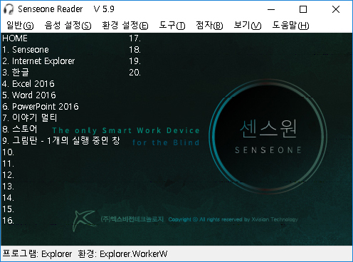
센스리더 툴바에 제공되는 즐겨찾기 메뉴로 진입시 위와 같이 기본적으로 등록된 즐겨찾기 항목이 나타나며, 등록되지 않은 항목은 숫자로 표기됩니다.
또한 사용자가 정의하지 않은 경우 1번 항목부터 작업 표시줄에 고정된 프로그램이 순차적으로 나열되게 됩니다.
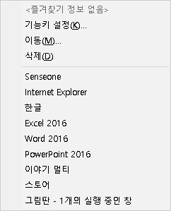
④ 아래 방향키를 이용하여 등록하고자 하는 항목을 찾아 엔터를 누릅니다.기존에 등록한 즐겨찾기 항목을 다른 위치로 이동할 때 이용 합니다.
① 센스리더를 호출하여 툴바 메뉴의 즐겨찾기 메뉴로 진입 합니다.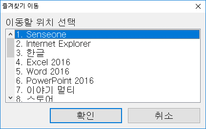
③ 대화상자 목록에서 이동을 원하는 위치에 포커스하고 Tab 키를 눌러 확인 버튼에서 엔터를 누릅니다. 즐겨찾기 등록을 잘못 수행했거나 해당 위치에 다른 응용 프로그램을 등록하고자 하는 경우 삭제 기능을 이용합니다.
삭제는 등록한 즐겨찾기 항목에서 팝업키를 누르고 아래 방향키로 삭제를 찾아 엔터를 누르면 됩니다.
센스리더에서는 즐겨찾기 등록 뿐만 아니라 등록된 즐겨찾기 항목에 기능키를 설정하므로써 나만의 단축키를 지정하여 이용할 수 있습니다.
등록한 즐겨찾기 항목에 기능키를 설정하는 방법은 기존 기능키 설정 항목과 동일하며 기능키 설정에서 확인할 수 있습니다.
센스리더에서는 일정 관리 기능을 통해 지정된 날짜/시간에 알림을 받거나 시스템을 자동으로 종료시킬 수 있습니다.
매시간 또는 지정된 간격마다 현재 시간을 알려주도록 일정을 추가합니다.
① 센스리더를 호출하여 툴바 메뉴의 5. 일정 관리로 진입 합니다.지정된 시간 이후에 시스템이 자동으로 종료되도록 일정을 추가합니다.
① 센스리더를 호출하여 툴바 메뉴의 5. 일정 관리로 진입 합니다.알림음 설정은 소리및 문자열 설정 도움말을 참고하세요.
지정된 날짜/시간에 입력된 내용으로 알림창을 띄워주는 일정을 추가합니다.
① 센스리더를 호출하여 툴바 메뉴의 5. 일정 관리로 진입 합니다.알림음 설정은 소리및 문자열 설정 도움말을 참고하세요.
일정 목록에 추가된 일정 항목에서 엔터키를 누르거나 팝업키를 눌러 일정 항목을 편집할 수 있습니다.
① 센스리더를 호출하여 툴바 메뉴의 5. 일정 관리로 진입 합니다.선택된 일정에서 스패이스 키를 누르거나 팝업 메뉴에서 "일정 선택 토글" 항목을 찾아 엔터 합니다.
선택된 일정에서 팝업키를 눌러 "요일 반복 설정" 메뉴를 찾아 엔터 합니다.
① 스패이스 키로 요일 반복을 켜거나 끕니다. 선택된 일정에 입력된 날짜를 양력 또는 음력 날짜로 변환합니다.
변환을 위해서는 연 월 일 정보가 모두 입력이 되어 있어야 하며, 컴퓨터가 인터넷에 연결되어야 합니다.
선택된 일정에서 엔터 하거나 팝업 메뉴에서 "속성" 항목을 찾아 엔터하면 일정을 추가할 때와 같은 설정화면이 나타나며 입력된 값들을 변경할 수 있습니다.
선택된 일정에서 팝업키를 눌러 해당 일정을 목록에서 제거합니다.
일정 알림에 사용할 알림음을 설정합니다.
알림음 설정은 소리및 문자열 설정 도움말을 참고하세요.
일정 추가 항목에서 팝업키를 눌러 "파일에서 가져오기" 및 "파일로 저장" 기능으로 등록된 일정을 파일에 백업하거나 파일에서 복원할 수 있습니다.
① "파일에서 가져오기" 는 일정파일(*.set) 파일을 읽어 일정 목록에 등록합니다.
② "파일로 저장" 기능은 일정 목록에 등록된 일정들을 (*.set) 파일로 저장합니다.
시스템 자동 종료 항목들은 파일로 저장되지 않습니다.
기술 지원 메뉴에서는 온라인 기술 지원 및 회사 홈페이지 주소, 사용중인 센스리더 정보등을 빠르게 확인할 수 있도록 도와줍니다.
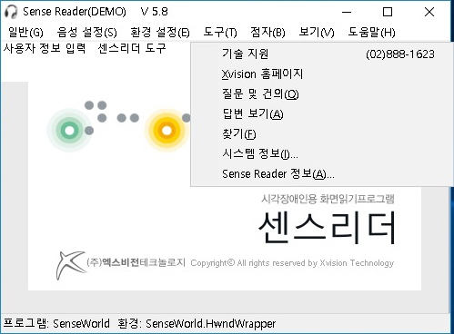
'질문 및 건의', '답변 보기', '찾기'등에 대한 자세한 사용 방법은 기술 지원에서 확인이 가능하며, '시스템 정보'에서는 현재 사용중인 PC의 CPU, 메모리등을 확인할 수 있습니다.
또한 'Sense Reader 정보'에서는 현재 사용중인 센스리더의 버전 및 프로그램 버전 정보등을 확인할 수 있습니다.